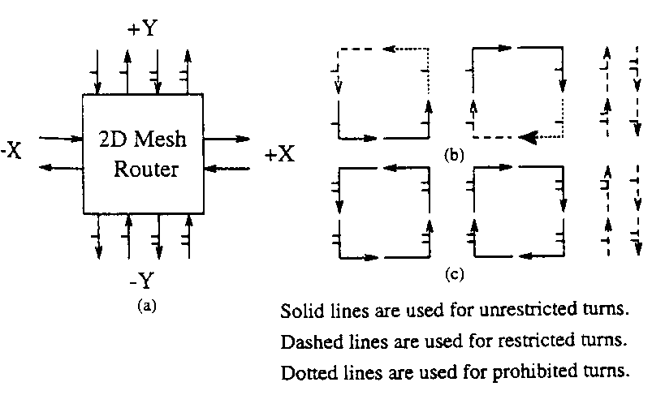
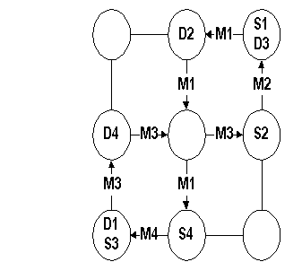
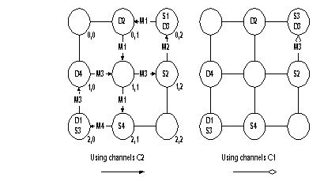

Optimal Fully Adaptive Minimal Wormhole Routing for Meshes
Loren Schwiebert and D.N.Jayasimha
Journal of Parallel and Distributed Computing Vol. 27,pp.56-70,1995
Abstract
A deadlock-free fully adaptive minimal routing algorithm for meshes that is optimal in the number of virtual channels required and in the number of restrictions placed on the use of these virtual channels is presented. It is also proved that, ignoring symmetry, this routing algorithm is the only fully adaptive routing algorithm with uniform routers that achieves both of these goals. This new algorithm requires only 4n-2 virtual channels for an n-dimensional mesh. In additional channels with the fewest possible number of restrictions. The proofs are first presented for the 2D mesh and then generalized to n-dimensional meshes.
Partially adaptive routing algorithms do not allow all message to use any shortest path.
Fully adaptive routing algorithms do allow all messages to use any shortest path.
The Optimal Fully Adaptive routing ,which has substantially fewer restrictions ,is proposed. Since there are cycles in the channel dependency graph, the turn model cannot be used to prove deadlock freedom.
A block diagram of the router with two virtual channels in the North and South directions is shown in Fig. 1a.
The Virtual channels in the North and South directions are differentiated by marking VC1n and VC1s with a single dash and VC2n and VC2s with double dash .
This configurations has sixteen 90
°turn and four 0°turns.Unrestricted turns are indicated by solid lines, restricted turns by dashed line, and prohibited turns by dotted lines.
The constrains imposed by the Optimal Fully Adaptive routing algorithm, referred to as opt-y, can be summarized succinctly: a message that needs to route further in the West direction cannot use VC1n or VC1s.

Fig. 1 Optimal fully adaptive routing.
Opt-y has the following two sets of constraints(Figs. 1b and 1c):
Opt-y is fully adaptive.
Opt-y is deadlock-free.
Opt-y requires only the minimum number of virtual channels.
Opt-y imposes only the minimum number of routing restrictions on there virtual channels.
Opt-y is the only algorithm to satisfy all of the previous properties.
Using Duato’s terminology , the routing algorithm is denoted R and the set R and the set of channels used by R is denoted C. There is some subset of channels, C1Í C, that define a routing algorithm R1Í R; i.e., R1 is the routing algorithm R restricted to using the set of channels C1.When there are cycles in the channel dependency graph, it is not possible to provide a numbering of the channels that guarantees the channels are used in always increasing or always decreasing order. Instead, Duato has shown that any routing algorithm of the form R:N
×N® Cp is deadlock-free if it satisfies the following three conditions:Lemma 1. Routing algorithm R1 is connected.
Lemma 2. Routing algorithm R1 is acyclic and therefore deadlock-free.
Lemma 3. The additional channels of routing algorithm R do not introduce cycles in the extended channel dependency graph of C1.

Fig. 2 Deadlock

Fig. 3 The deadlock of Fig2 deadlock-free with opt-y
The channels C1 is deadlock-free ,because it’s routing is acyclics.
The channels C2 is unrestricted turns. Cycles are permitted in channels C2. (as Fig. 2) .
The message M3 does not need to route further West by opt-y algorithm, so M3 can turns from channels C2 to channels C1. The message M3 can achieve D3. Then Deadlock-free in C2 by opt-y algorithm.
Theorem 3. Deadlock-free fully adaptive wormhole routing on a 2D mesh requires a second virtual in two opposite directions, either North and South or East and West.
Lemma 4. At least two 90
°turns must be prohibited to make the routing algorithm deadlock-free.Theorem 4. Ignoring symmetry, opt-y prohibits fewer 90
°turns than any other deadlock-free fully adaptive routing algorithm that uses only six virtual channels.Theorem 5. No routing algorithm using only six virtual channels per router can have fewer restrictions than those imposed by opt-y.
Created by: Jain-Ming Chen
Date:May.1 1997